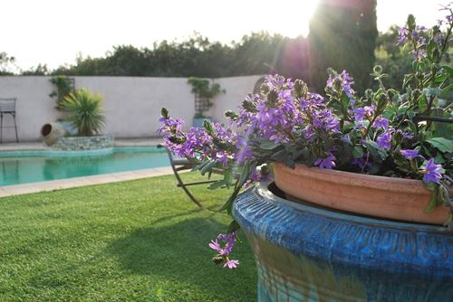
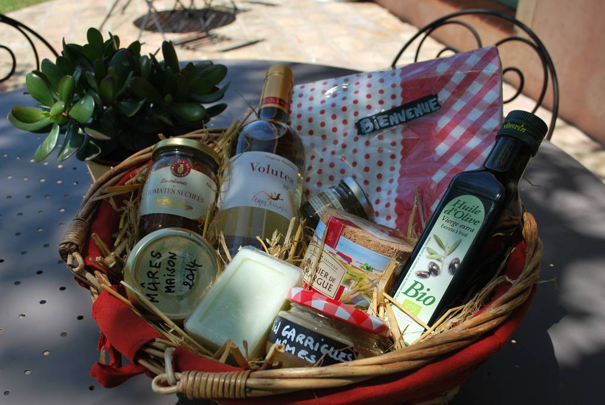
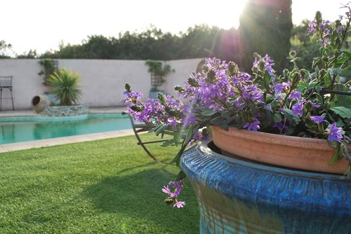
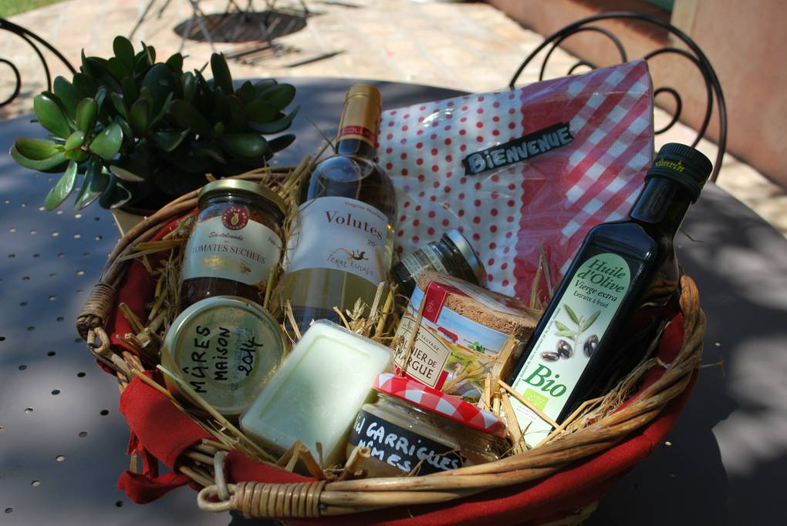

Propriété de campagne, à 10 mn du centre de Nîmes, Jardin, Animaux, Piscine privée,
Jeux, Calme et Nature.
capacité :
8 personnes + BB Location : week-end, semaines, vacances
 



Un havre de paix dans un écrin de verdure
propriété s'étend sur un hectare, ceinturée de garrigue, avec moutons, poules et chien, sans aucune nuisance alentours.
Nous sommes à 10 mn du centre de Nîmes, 2 km des commerces, 2 klm de la sortie d'autoroute, et 2 km de SMAC PALOMA (Scène de Musique Actelle), et bien sur à côté du Pont du Gard, de la Camargue et bien d'autres choses encore.....
Maison de caractère de 160 m2, sur 3 demi niveaux, et dépendances. ( double garage, mazet, bergerie, poulailler)